We asked happy clients to share photos of our work:

 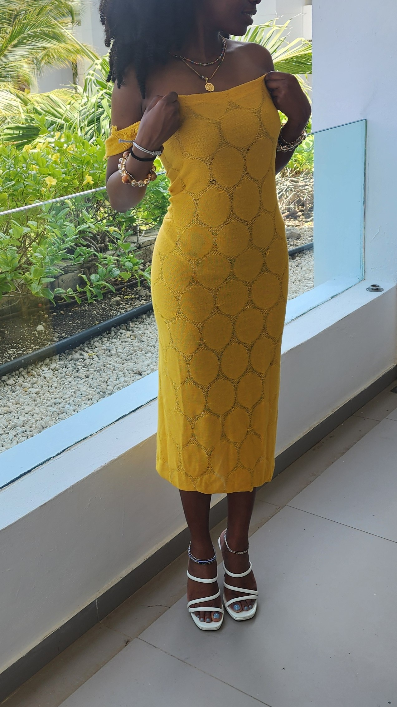
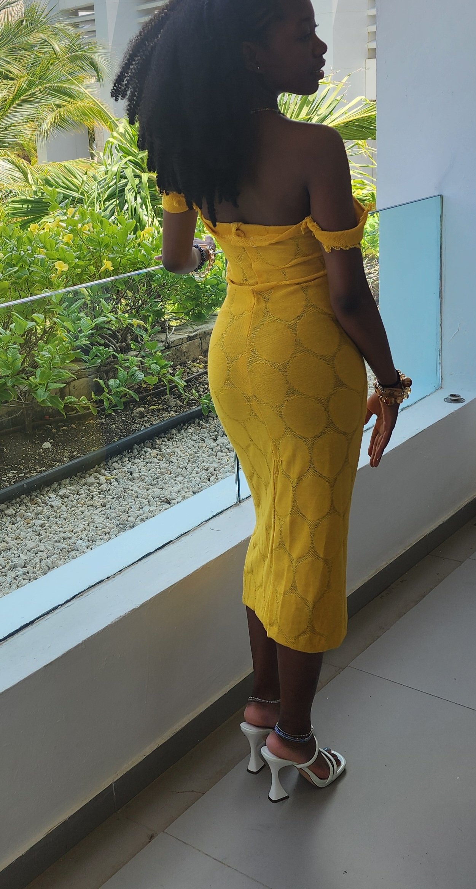
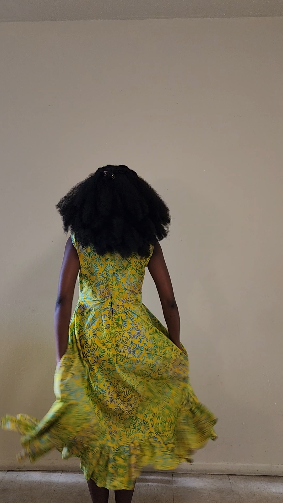
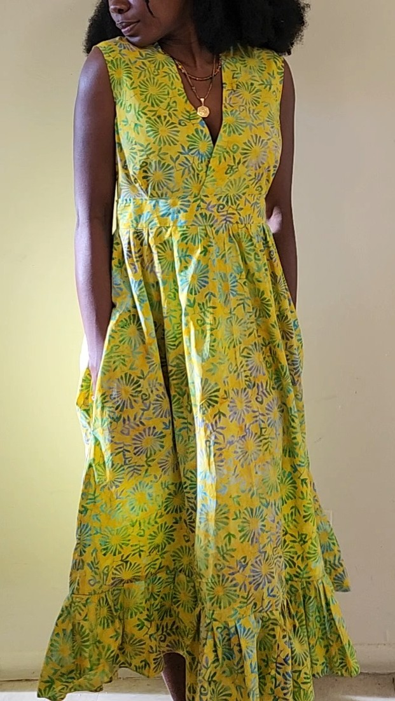
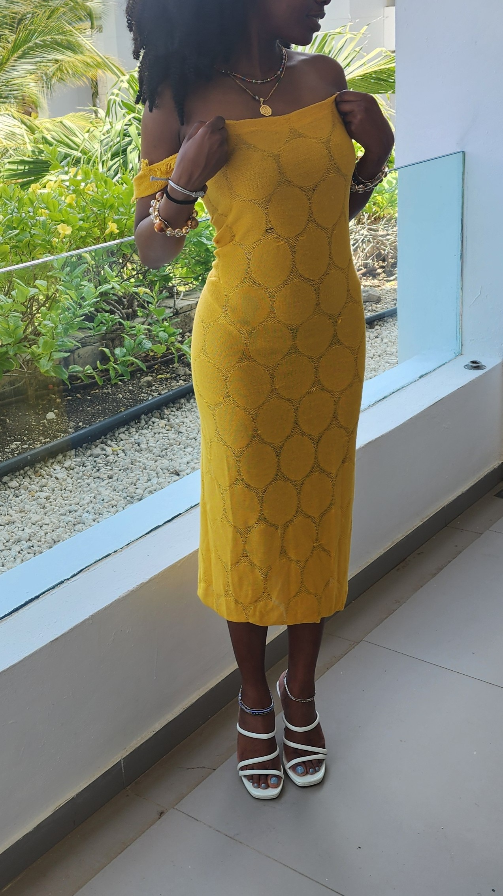
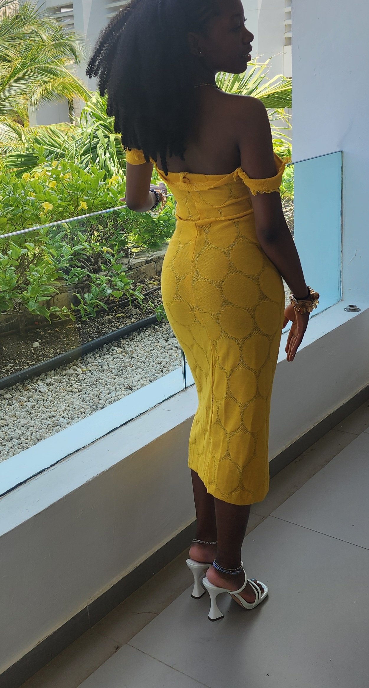
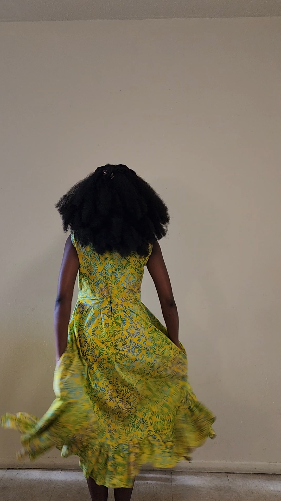
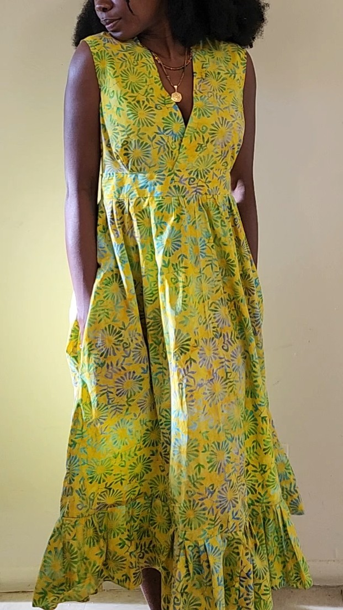


 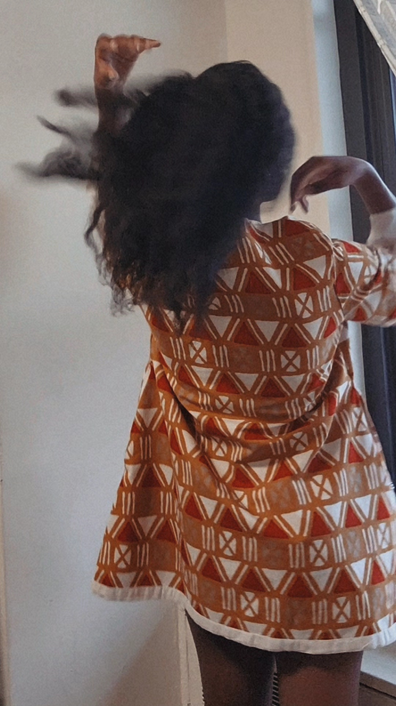
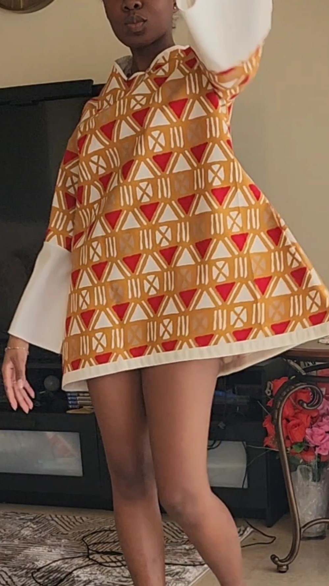
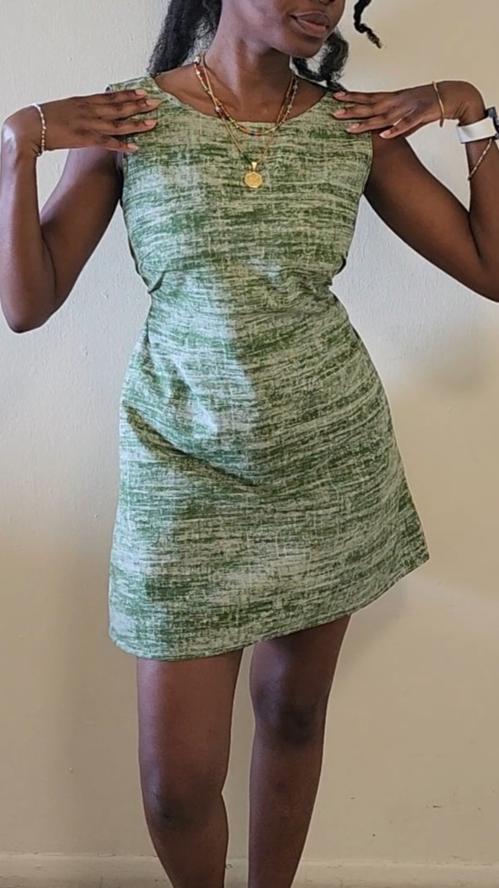
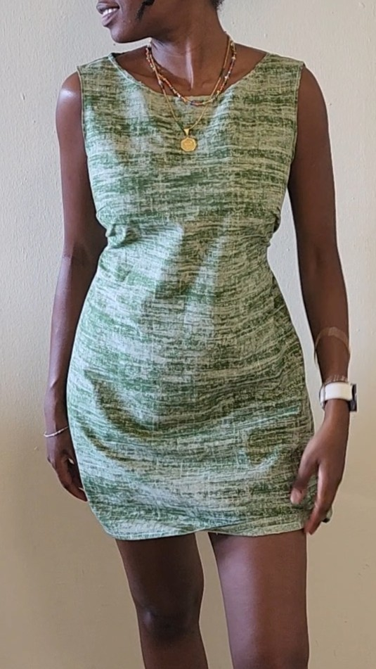
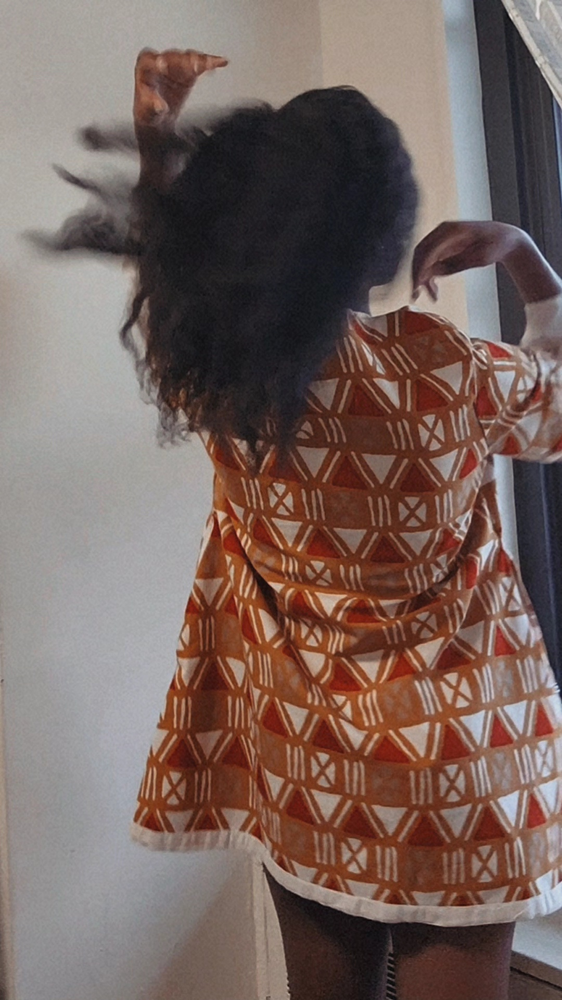
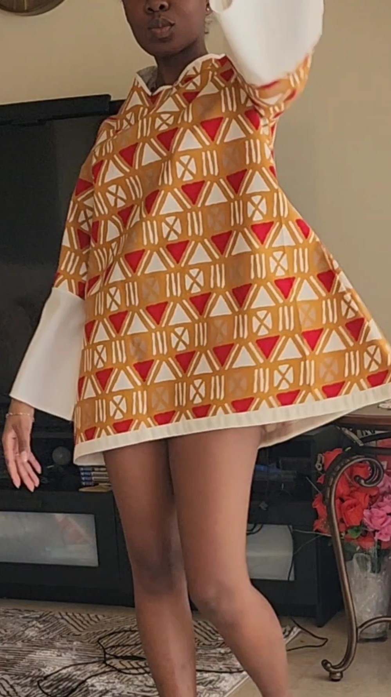
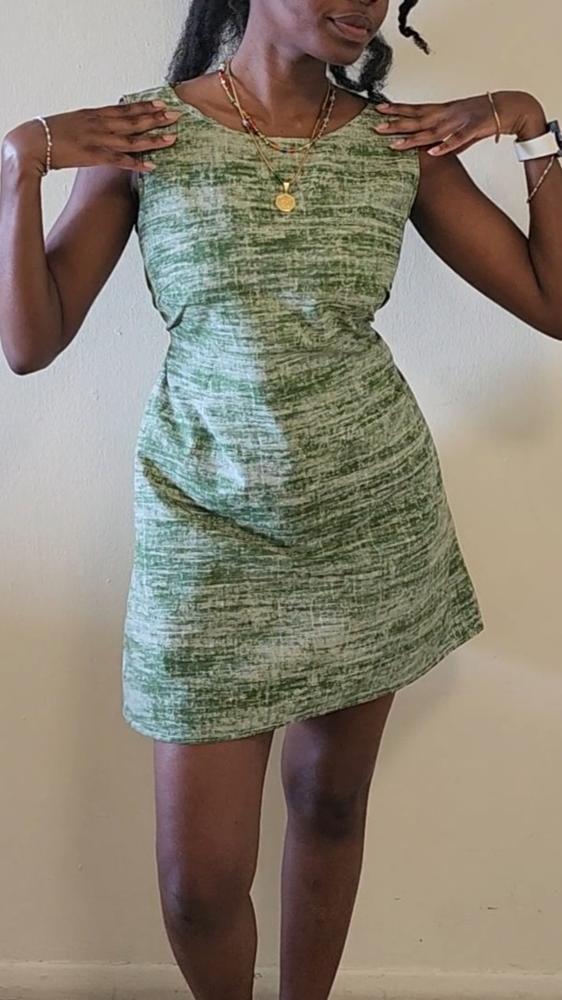
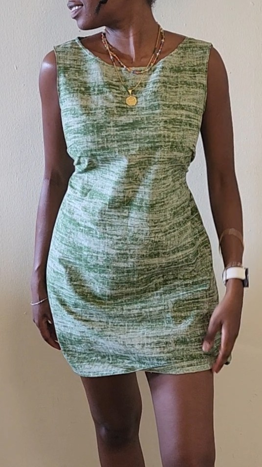


Most Recent post:
@bntuma Storytime: How i made this cute dress! Full sewing tutorial will be uploaded soon but for now, enjoy this story time of how i made the dress from start to finish! This design is also the perfect sewing project for beginner sewist. Like how adorable is she?! And it’s perfect for winter, just layer up with some tights or leggings underneath, staying cute and warm and year round 🥰✨👗 This is my design and sewing process of the Akua Dress using woodin anakara print fabric. #sewingtutorial #sewingideas #sewing #beginnersewing #ghanatiktok🇬🇭 ♬ Southside Chicago - Otis Brown & The Delights